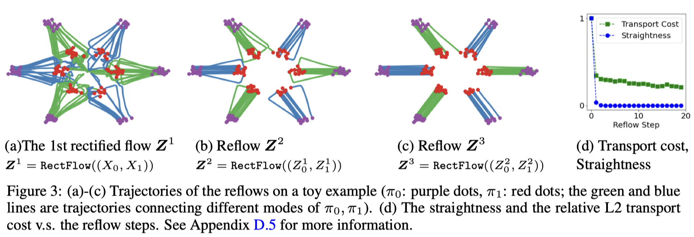
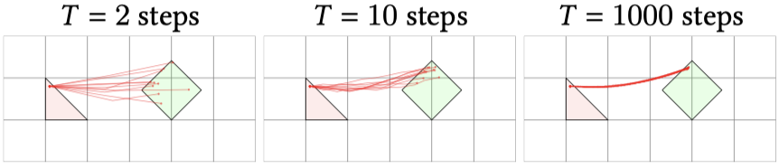

正規化流
深層生成モデル４
2024-02-14
A Blog Entry on Bayesian Computation by an Applied Mathematician
$$
$$
ベクトル場 \(F:\mathbb{R}^d\times[0,T]\to\mathbb{R}^d\) に関して ODE \[ \frac{d x_t}{d t}=F(x_t,t) \tag{1}\] を満たす曲線 \((x_t)\) を 積分曲線 という．
CNF (Continuous Normalizing Flow) では，\((x_t)\) はデータ分布とノイズ分布を結ぶダイナミクスとする．すなわち，フロー \((f_t)\)，特に \(f_1\) を輸送写像としてノイズからのデータの生成を目指す．
この積分曲線をモデリングするために，ベクトル場 \(F\) をニューラルネットによってモデリングするが，CNF では離散化誤差を入れずに，連続なままモデリングする方法を考える．
\(F\) が得られたならば，Euler の方法により積分曲線 \((x_t)\) を数値計算できる： \[ x_{t+\epsilon}=x_t+\epsilon F(x_t,t),\qquad\epsilon>0. \]
この式の形から，\(F\) が定める ODE を \(\epsilon F(x_t,t)\) が定める \(T/\epsilon\) 層の残差ネットワークによってモデリングすることもあり得たが，それではタイムステップ \(\epsilon>0\) を自由に設定することができない．
連続時間アプローチではこの出力 \(x_T\) を得る手続きは，完全にネットワーク外の ODE ソルバーに任せてしまう．一方で，\(\epsilon>0\) を自由に取れるように，連続なままダイナミクスをモデリングする．これが NODE (Neural ODE) (Chen et al., 2018) である．
従って NODE ではその強みを活かし，\(\epsilon>0\) を必ずしも等間隔ではなく，適応的な設定が追求される．
\(F(x_t,t)\) を何度も使う NODE のスキームは，\(x_0,x_T\) のみに依存した損失関数に関する誤差逆伝播法に向いていない．
(Chen et al., 2018) では，最適制御の分野で知られていた (Pontryagin et al., 1962) の 随伴感度法 (adjoint sensitivity method) を用いた誤差逆伝播法の連続時間への拡張を提案している．
時刻 \(t\) での損失 \(L_t(x_t)\) はパス \((x_t)\) の全体に依存する汎函数であるとする： \[ L_t(x_{t}):=L\left(x_0+\int^t_0F_\theta(x_t,t)\,dt\right). \]
\(\frac{d L_t}{d \theta}\) を計算するためには，まずは次の 随伴（状態） を考える： \[ a(t):=\frac{d L_t(x_t)}{d x_t}. \]
出力 \(x_T\) が得られているとするならば，この随伴は (Pontryagin et al., 1962) の定理から次の ODE を後ろ向きに解けば良いため，実際に \(x_t,L_t\) を計算して微分する必要はない： \[ \frac{d a(t)}{d t}=-a(t)^\top\frac{\partial F_\theta(x_t,t)}{\partial x_t}. \tag{2}\]
この ODE にも \(x_t\) の項が表れているが，ODE (1) と同時に解けば良い．こうして \(a(t)\) を得たのちは，
\[ \frac{d L_t}{d \theta}=-\int^t_0a(s)^\top\frac{\partial F_\theta(x_s,s)}{\partial \theta}\,ds \tag{3}\] によって最終的な勾配を得る．
NODE を連続な正則化流として用いるためには，損失 \(L\) に尤度 \(p_T\) を登場させる必要がある： \[ \log p_t(x_t)=\log p(x_0)-\log\lvert\det J_{f_t}(x_t)\rvert. \]
そして尤度の評価のためにはフロー \((f_t)\) の Jacobian \(J_{f_t}(x_t)\) が必要である．
残差ネットワークによる正規化流 においては，Hutchinson の跡推定量 を用いたり，残差接続の関数形を単純にして Jacobian を解析的に計算可能にしたりという方法で，Jacobian の計算 \(O(d^3)\) を効率化していた．
NODE では，Jacobian \(J_{f_t}(x_t)\) は \[ \frac{d \log p_t(x_t)}{d t}=-\frac{d \log\lvert\det J_{f_t}(x_t)\rvert}{d t}=-\operatorname{Tr}\biggr(J_{F_t}(x_t)\biggl) \] を利用することで，\(J_{F_t}\) の跡から得ることができる (Chen et al., 2018, p. 定理1)： \[ \log p_t(x_t)=\log p(x_0)-\int^t_0\operatorname{Tr}\biggr(J_{F_s}(x_s)\biggl)\,ds. \]
\(\det J_{f_t}(x_t)\) の行列評価が \(O(d^3)\) であるところを，\(\operatorname{Tr}(J_{F_t}(x_t))\) の計算は \(O(d^2)\) で済む．
こうして，勾配 \(D_\theta L_t\) と Jacobian \(J_{f_t}\) の計算が，いずれも \(F_\theta\) の微分係数が定める ODE の数値解を求めることに帰着される．
FFJORD (Free-Form Jacobian of Reversible Dynamics) (Grathwohl et al., 2019) では，\(\operatorname{Tr}(J_{F_t}(x_t))\) の計算に Hutchinson の跡推定量 を用いる： \[ \log p_t(x_t)=\log p(x_0)-\operatorname{E}\left[\int^t_0\epsilon^\top J_{F_s}(x_s)\epsilon\,ds\right]. \]
これにより最終的に \(O(d)\) の計算量が達成される上に，Glow (Kingma and Dhariwal, 2018) の 2% 以下のパラメータ数に抑えられる．
Neural SDE (Tzen and Raginsky, 2019), (Peluchetti and Favaro, 2020) は ODE を SDE に拡張することでモデリングの柔軟性をさらに高めた．
これらの方法では SDE の係数をニューラルネットワークでモデリングし，サンプリングは SDE ソルバーによって行う．
これについては 拡散モデル の稿を参照：
拡散模型をスコアマッチングと見ることでさらに効率的な訓練が可能になったように，NODE を フローマッチング (FM: Flow Matching) (Lipman et al., 2023) と見ることでよりスケーラブルな代替訓練方法が与えられる．
FM ではベクトル場 \(F_\theta(x_t,t)\) を直接目標 \(F(x_t,t)\) に向けて回帰する．この目標 \(F(x_t,t)\) はノイズ分布とデータ分布を結ぶ輸送を定めるように決定される．
直接的な目標 \(F(x_t,t)\) を特定することで，随伴感度法と ODE ソルバーを通じた連続な誤差逆伝播よりも直接的な訓練目標 (5) が得られ，効率的でスケーラブルな訓練手法が得られる．
拡散過程 も，与えられた SDE と等価な輸送を行う ODE (Y. Song et al., 2021), (Maoutsa et al., 2020) を通じてベクトル場のモデリングに議論を帰着できるから，FM により Neural ODE を効率的に訓練できたら，拡散模型のサンプリングの遅さの問題も解決できる．しかし，フローマッチングの美点はそれにとどまらない．
始点と終点がノイズ分布とデータ分布である限り，輸送はそもそも拡散過程に基づいたものである必要はない．フローマッチングでは，\(F(x_t,t)\) をそのように選ぶことで，最適輸送経路に沿った輸送を行うベクトル場を直接学習することを考えることもできる (Lipman et al., 2023)．
当時，Denoising Score Matching が使える拡散模型と違い，CNF にはスケーラブルな訓練手法が存在しなかった．この拡散模型の加速の問題を，CNF の訓練の加速の問題と同時に解いたのが FM (Lipman et al., 2023) である．
その発想の鍵は，\(\mathcal{P}(E)\) 上の経路のみに注目することで，SDE と ODE を「輸送 \((p_t)\) を定めるフロー \((\phi_t)\) を構成する道具」として相対化することであった．同様のアイデアは，同時期に確率的補間 (Michael Samuel Albergo and Vanden-Eijnden, 2023) と rectified flow (Liu et al., 2023) と２つ提出されている．
Flow Matching (Lipman et al., 2023) のアイデアは，ノイズ分布とデータ分布を結ぶ輸送 \(p_t:=(f_t)_*p_0\) を定めるベクトル場 \(F(x_t,t)\) に関して， \[ \overline{\mathcal{L}}(\theta):=\lvert F_\theta(X_\tau,\tau)-F(X_\tau,\tau)\rvert^2,\qquad \tau\sim\mathrm{U}([0,T]),X_\tau\sim p_t(x_\tau) \] を目的関数とするというものである．
すなわち，ベクトル場ネットワーク \(F_\theta\) を準備し，目的の \(F\) に向かって最小二乗法を用いて訓練する．
アイデアは大変シンプルであり，拡散模型とスコアマッチングのアナロジーに沿うものであるが，条件を満たす \(F\) は複数ある上，データ分布 \(p_T\) が不明であるために \(F\) の解析的な表示も不明である．
これは Monte Carlo 法により解決できる．
まずデータ分布 \(p_T\) を，経験分布 \[ q(y)\,dy=\frac{1}{n}\sum_{i=1}^n\delta_{x_i} \] と Gauss 核の畳み込みで近似する： \[ p_T(x)=\int_{\mathbb{R}^d} p_T(x|y)q(y)\,dy,\qquad p_T(-|y)=\operatorname{N}_d(y,\sigma^2I_d). \]
すると，各データ点 \(y\in\{x_i\}_{i=1}^n\) に関して輸送 \((p_t(x|y)\,dx)_t\) を \[ p_T(-|y)=\operatorname{N}_d(y,\sigma^2I_d),\qquad p_0(-|y)=\operatorname{N}(0,I_d), \tag{4}\] を満たすように学習すれば，全体としてノイズ分布をデータ分布に輸送する道 \((p_t)\) が得られる．
これを，\(p_T(-|y)\) を生成する 条件付きベクトル場 (Conditional Vector Field) \(F_t(-|y)\) として学習し，最終的に次のように混合することで所望のベクトル場 \(F_t\) を得る (定理1 Lipman et al., 2023)： \[ F_t(x)=\int_{\mathbb{R}^d}F_t(x|y)\frac{p_t(x|y)q(y)}{p_t(x)}\,dy. \]
このことに基づき，次の代理目標が得られる： \[ \mathcal{L}(\theta):=\lvert F_\theta(X_\tau,\tau)-F_t(X_\tau|Y)\rvert^2,\qquad \tau\sim\mathrm{U}([0,T]),Y\sim q(y)\,dy,X_\tau\sim p_\tau(x|y)\,dx. \tag{5}\]
実は，単に代理目標となっているだけでなく，\(\overline{\mathcal{L}}\) と \(\mathcal{L}\) の \(\theta\) に関する勾配は一致する (定理2 Lipman et al., 2023)．
条件付き変数 \(y\) が離散的でない場合もこれは成り立つ (定理3.1 Tong et al., 2024)．さらに，\(p_0(-)\) が Gauss でない場合にも CFM は拡張できる (Tong et al., 2024)．
最後に，条件付き確率の (4) を満たす輸送 \((p_t(-|y))\) を，どのようにパラメータ付けして学習するかを考える．
式 (4) の始点と終点が Gauss 分布であることを見れば，Gauss 空間内での輸送 \[ p_t(x|y)\,dx=\operatorname{N}\biggr(\mu_t(y),\sigma_t(y)^2I_d\biggl),\qquad t\in[0,T], \] が候補に上がる．ただし，\(\sigma_t\) は単調減少とし， \[ (\mu_0(y),\mu_T(y))=(0,y),\qquad(\sigma_0(y),\sigma_T(y))=(1,\sigma_\min). \]
\(p_0(x|y)\,dx=\operatorname{N}_d(0,I_d)\) をこのような分布に押し出す写像で最も簡単なものは \[ \psi_t(x):=\sigma_t(y)x+\mu_t(y) \tag{6}\] である．したがって，フロー \((\psi_t)\) を定めるベクトル場 \[ F_t(x|y):=\frac{\sigma_t'(y)}{\sigma_t(y)}\biggr(x-\mu_t(y)\biggl)+\mu_t'(y) \tag{7}\] を目標として学習される．これが CFM (Conditional Flow Matching) (Lipman et al., 2023) である．
FM の貢献は，所望のフロー \((p_t(x|y))\) に対して，ベクトル場 \(F_t(x|y)\) をどのように定めれば良いかの必要条件を与えたところにもあるが，何より生成モデリングの問題を，モデリングから輸送へ中心を据え変えた点が大きい．
VAE と DDPM は確率モデルとして考案されたが，生成モデリングのために確率モデルを考える必要はなかったのである．1
重要なのは，「事前分布 \(p_0\) をどのように \(p_1\) に移すか」という輸送の問題だけであり，我々はずっと確率モデルと尤度という偽の目標に囚われていたのである．
GAN や VAE, NF は最尤推定が目標であった．拡散模型において，確率モデルの最尤推定の見方と輸送計画のスコア場を通じた学習としての見方の２つが出揃ったが，SGM はまだ輸送の問題を SDE の言葉で暗に捉えているのみであった．
フローとその \(\mathcal{P}(E)\) 上への押し出しが生成モデリングの本体であることがやっと明らかになったのは，拡散モデルと連続時間正規化流との関係が自覚されてからようやくのことである．2
FM, Rectified Flow, 確率的補間はいずれも，ODE を通じて輸送問題を解く．
所望の輸送 \((p_t)\) があった場合，これを定めるフローを生成するベクトル場 \(F_t\) は次のように特定される：
この ODE を 連続方程式 という．この連続方程式を解くベクトル場 \(F_t\) を学習することで，所望の輸送が学習できる．
FM では各データ点 \(y\in\{x_i\}_{i=1}^n\) に関する条件付きベクトル場 \(F_t(x|y)\) を \(y\) に関して積分したもの \(F_t(x)\) が解の１つであることを特定した（(Lipman et al., 2023) 定理１，第 2.3 節）．
この \(F_t(x|y)\) を CFM 目的関数 (5) の最適化により学習することで \(F_t(x)\)，果てには \((\phi_t)\) を学習することを目指した．
\(F_t(x|y)\) の具体的な形に関してはほとんど留保しており，(7) の形の条件付きベクトル場が使えるとし，例を２つ挙げたのみである（第 2.4 節）．
CFM は訓練可能な代理目標を定める非常に有用な方法であるが，条件付きベクトル場 \(F_t(x|y)\) を最適輸送に学習したからといって，最終的なベクトル場 \(F_t(x)\) が最適輸送を定めるとは限らない．これは条件付け変数 \(y\) を工夫して得る手法 OT-CFM (Tong et al., 2024) により乗り越えられる．
以降，FM の例（とみなせる手法）を３つ見る：
Rectified Flow (Liu et al., 2023) はこの最適輸送を定めるベクトル場 \(F_\theta(x_t,t)\) を，なるべく直線で行けるところまで行くような，区分線形なダイナミクスとして学習することを目指す．
これは，\(p_0,p_1\) からのサンプリングが可能な状況下では，目的関数 \[ \mathcal{L}(\theta)=\lvert(X_1-X_0)-F_\theta(X_\tau,\tau)\rvert^2, \tag{8}\] \[ \tau\sim\mathrm{U}([0,1]),X_0\sim p_0,X_1\sim p_1,X_\tau:=\tau X_1+(1-\tau)X_0, \] を最小化するように学習することで達成できるという．
これは任意のサンプル \(X_0,X_1\) を線型に繋ぐようなダイナミクスを目標として誤差を最小化しているが，このようなダイナミクスは ODE が定めるものではない．実際，簡単に交差してしまい，ODE の解の一意性に違反する．
従って recrified flow の有用性は実証的に認められなければならないが，(Liu et al., 2023) は FID と recall に関する SOTA を CIFAR-10 で達成している．
これは，rectified flow は繰り返すことができることによる．目的関数 (8) を最小化するベクトル場 \(F(x,t)\) について， \[ dZ_t:=F(Z_t,t)\,dt,\qquad Z_0\sim p_0, \] は \(Z_1\sim p_1\) を満たす．次に \((Z_0,Z_1)\) に関して再び rectified flow を適用して得るダイナミクスは，元の \(F\) よりも直線的で (定理D.7 Liu et al., 2023, p. 26)，輸送コストが落ちたものになる (定理D.5 Liu et al., 2023, p. 24)．

\(X_t=tX_1+(1-t)X_0\) という直線的なダイナミクスを変更して， \[ X_t=\alpha_tX_1+\beta_tX_0,\qquad\alpha_1=\beta_0=1,\alpha_0=\beta_1=0, \] という非線型なダイナミクスを考えた場合，これは probabilistic flow ODE (Y. Song et al., 2021) や DDIM (J. Song et al., 2021) に等価になる．
Rectified Flow は Stable Diffusion 3 のアーキテクチャ (Esser et al., 2024) に採用されており，従来の拡散モデルの方法より画像生成用途に優れていると結論付けている．8
IADB (Iterative \(\alpha\)-(de)Blending) (Heitz et al., 2023) は，どうやら直線にはならないようであるが，効率的な決定論的ダイナミクス \((\phi_t)\) が，次の逐次サンプリングによって得られることを報告している：
\(N\to\infty\) の極限で，\((X_{\alpha_n})_{n\in[N]}\) はある確定的なダイナミクスに収束する (定理 Heitz et al., 2023, p. 3)．

同時に，ニューラルネットワークによりこの軌道を訓練するための，Rectified Flow 様の目的関数 (8) も導入している．
実は，この結果学習される軌道は，DDIM (J. Song et al., 2021) のものと一致するため，拡散モデルの決定論的な代替として機能する．
\(\alpha\)-ブレンド (Porter and Duff, 1984) の名前の通り，コンピュータグラフィクスへの応用も意識して議論されている．
(Michael Samuel Albergo and Vanden-Eijnden, 2023) により提案されたもので，SiT (Scalable Interpolant Transformer) (Ma et al., 2024) でも用いられている技術である．
この方法では \(p_0,p_1\) からのサンプル \(x_0,x_1\) に対する決定論的輸送 \((I_t(x_0,x_1))\) に注目し，ベクトル場 \(F_t(x)\) を \[ \operatorname*{argmin}\mathcal{L}(F):=\operatorname*{argmin}\operatorname{E}\biggl[\biggl|F_T(I_T(X_0,X_1))-2\partial_tI_T(X_0,X_1)\cdot F_T(I_T(X_0,X_1))\biggr|\biggr] \] のただ一つの解として探索する．この解が輸送 \((p_t)\) を定めることが，連続方程式を通じて (命題1 Michael Samuel Albergo and Vanden-Eijnden, 2023, p. 4) で示されている2．
この方法では，目標 \(p_1\) と学習された輸送 \((\phi_1)_*p_0\) との誤差を 2-Wasserstein 距離で測ることもできる．
また，学習されたダイナミクスは，ある Langevin 過程の時間変換に等しくなる (命題4 Michael Samuel Albergo and Vanden-Eijnden, 2023, p. 7)．
さて，輸送問題 2.5 は，確率過程 \((X_t)_{t\in[0,1]}\) を，２つの時点 \(X_0,X_1\) に関する観測から推定する問題とも等価である．
こうみると，拡散模型とフローマッチングの違いは，２つの \(X_0,X_1\) を繋ぐダイナミクス \((X_t)_{t\in[0,1]}\) を，どのような帰納バイアスの下で推定するかの違いに他ならない．
すると拡散模型は，これを Langevin 拡散により内挿する問題，そして FM をはじめとして Rectified Flow や \(\alpha\)-ブレンディングは，これを線型などの単純なダイナミクスにより内挿する問題として理解できる．
一般に，確率過程 \((X_t)_{t\in[0,1]}\) の独立なコピー \(X^1,X^2,\cdots,X^n\) から，ランダムな時点 \(t\in[0,1]\) での観測 \[ X^1_{t_1},X^2_{t_2},\cdots,X^n_{t_n},\qquad\{t_i\}_{i=1}^n\subset[0,1], \] をもとに，\((X_t)\) を推定する問題を 軌道推定 (trajectory inference) (Lavenant et al., 2024) という．9
作用マッチング (Action Matching) (Neklyudov et al., 2023) では，生成モデリングを軌道推定の問題として解く．
ただし，軌道はある作用 \(s_t^*:\mathbb{R}^d\to\mathbb{R}\) に関する勾配ベクトル場 \(\nabla_xs_t^*\) が定めるフローであると仮定した下で，この場を \[ \widetilde{\mathcal{L}}(\theta)=\frac{1}{2}\operatorname{E}\biggl[\biggl|\nabla s_T(X_T)-\nabla s^*_T(X_T)\biggr|\biggr],\qquad T\sim\mathrm{U}([0,1]),X_T\sim p_T, \] の最小化によって学習することを考える．
この \(\widetilde{\mathcal{L}}\) は真の場 \(s^*\) を含むが，次の目的関数と定数を除いて一致するため，次の目的関数により訓練可能である： \[ \mathcal{L}(\theta):=\operatorname{E}\biggl[s_0(X_0)-s_1(X_1)+\frac{1}{2}\lvert\nabla s_T(X_T)\rvert^2+\partial_ts_T(x_T)\biggr]. \]
一方で Neural Lagrangian Schrödinger 橋 (Koshizuka and Sato, 2023) では，同様にラグランジアンの言葉で帰納バイアスを導入しながら，拡散過程のダイナミクスを学習する．
(Lettermann et al., 2024) は NODE に触れつつ，随伴感度法を用いた複雑系のモデリングとパラメータ推定の方法を解説したチュートリアルである．
(Michael S. Albergo et al., 2023) は確率的補間の観点をさらに推し進め，CNF と Diffusion モデルを統一的な観点から提示している．
Cambridge MLG による An Introduction to Flow Matching の web ページ (Fjelde et al., 2024) も参照．
軌道推定の見方は新しいようで古い．はじめ TrajectoryNet (Tong et al., 2020) という CNF 手法は軌道推定に用いられており，のちに OT-CFM として生成モデリングにも使えることが自覚されたのである．
TrajectoryNet では，OT によりより直線的な軌道が学習されるような帰納バイアスを導入することが主眼であった．
生成モデルとしての VAE の学習された潜在変数が，何らかの現実を意味していると仮定して解釈を試みることはないだろう．↩︎
フローをナイーブに確率モデルとしてみると無限層のニューラルネットワークと見る．これを打開した NODE のアイデアが，尤度原理という蒙昧の打開に必要であったのかもしれない．「拡散過程はサンプリングが遅い」というのは，この発想の転換の最後の離陸の段階であったのだろう．これは拡散過程の正確なシミュレーションが困難である一方で，区分確定的過程のシミュレーションが容易であることに対応する．↩︎
(Liu et al., 2023) と (Michael Samuel Albergo and Vanden-Eijnden, 2023), (Heitz et al., 2023) の問題設定に従った．↩︎
(Liu et al., 2023) はこのような輸送の問題として，GAN や VAE をはじめとした生成モデリングと，ドメイン転移の問題をみた．↩︎
(Michael Samuel Albergo and Vanden-Eijnden, 2023, p. 2) など．正確なステートメントは，(Ambrosio et al., 2008, p. 183) 定理8.3.1 など参照．↩︎
さらに，\(\sigma\to0\) の極限をとっており，CFM がまだ確率的であるのに対して，Rectified Flow では \(p_t(-|y)\) は完全に Delta 分布になる．↩︎
さらに，Rectified Flow が直線を考えているのに対して，\(I_t(x_0,x_1):=\cos(\pi t/2)x_0+\sin(\pi t/2)x_1\) という回転様の補間を考えている．↩︎
DDPM (Ho et al., 2020) と同様，正確な訓練目標ではなく，困難なデノイジングでの成功を強調する uniform reweighting した訓練目標を用いている点に注意．↩︎
(Hashimoto et al., 2016), (Koshizuka and Sato, 2023) などは scRNA-seq データへの応用を念頭に population dynamics と呼んでいる．古典的な横断面データ (cross-sectional data) の設定に似ている．↩︎